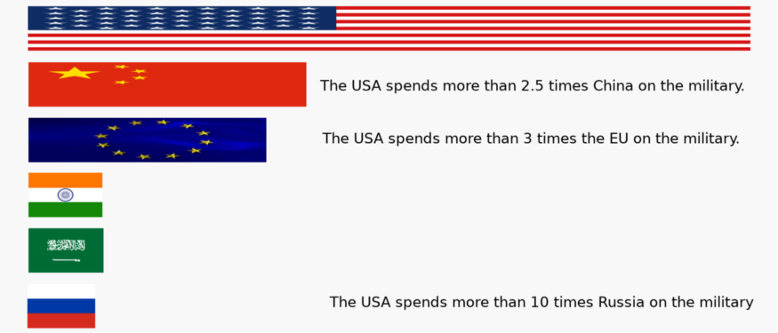

The USA has 4.3% of the world’s population and 24% of the world’s production, but spends an outsized 36% of the world’s military spending. In 2018, we spent $648 billion.
The closest country in military spending is China. Numbers are fuzzy, but the highest estimate for 2018 was $250 billion. The USA spent more than 2.5 times that.
All together, the EU has more population (6.8% of world) and roughly the same production (22% of the world). It spent $214 billion on the military. The USA spent more than 3 times that.
Our old nemesis, Russia, has shrunk and only spends $61 billion on the military, less than 10% of the USA’s budget. India and Saudi Arabia spend about as much.

In short, the USA spends a lot more on the military than other countries.
I like to compare costs to benefits. Unfortunately, it is hard to quantify the benefit of the military. Most of the time, tanks and planes sit around, waiting for a catastrophe. We have no way to count the invasions that didn’t happen because the USA had a large military with the best equipment in the world. While the military does produce side benefits (military research created the Internet and GPS), those are small for the cost.
And our costs are high. If we chose “only” to spend twice as much as China, our closest competitor, we could save $148 billion or, using my shortcut, $444 for every American. If we spent 1.8% of our production on the military, which is what the average is worldwide, we would still have the largest military and would save $277 billion, or $833 for each adult and child in the USA, every year.
Details for quibblers and geeks: I try to avoid nitpicking details, but it is hard in this case. Econ geeks will notice that I used market exchange-rates to compare international spending, instead of purchasing power parity (PPP). I thought that appropriate for this usage, since arms are traded internationally at market prices. If I used the USA’s portion of the world’s production using PPP, which is 15%, it would make the 36% of military spending look even larger.
The military budgets are large and diverse. Deciding what to include as “military spending” is difficult. For the USA, it includes pensions and military-related spending of the DOE and State Dept.. It also includes the approximately $45 billion to support the 14,000 troops deployed in Afghanistan. The total does not include Veterans Affairs spending ($197 billion in 2018) nor intelligence agencies ($59 billion). It does not include interest on the national debt. The USA spent over $1,500 billion on the wars in Iraq and Afghanistan and some respected analysts include interest on money borrowed for them under military costs. The interest might amount from $37 to $75 billion each year. If I included the VA and interest (but not the intelligence agencies), our yearly military spending is about $900 billion, or $2,700 for every adult and child in the USA.